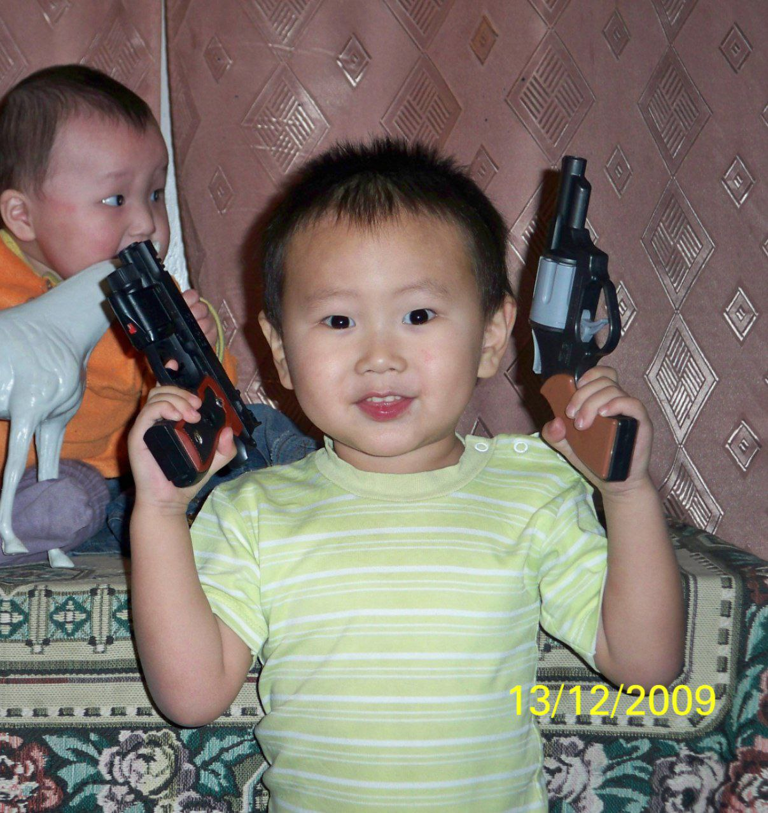

Меня зовут Уйгуров Ньургун, я выходец из Республики Саха(Якутия), Горного район, села Бердигестях. Я родился в полной семье из 7-и детей и 2-х родителей, самому старшему ребенку в семье 22 года, а самому младшему члену семейства 2 года.
Когда мне было 7 лет, я решил приготовить лапшу быстрого приготовления, заранее спросив разрешения у старшей сестры, и ввиду своей неосторожности и неуклюжести, я уронил на себя 5-и литровый чайник с кипятком внутри. Сражаясь в борьбе с кипятком, я не выдержал и крикнул, что есть мочи, на мой зов пришли все, кто был в доме, и оказали мне первую помощь. Потом приехала машина скорой помощи и меня забрала в больницу, где меня пытали на протяжении 3-х суток. По окончанию этих дней меня на вертолете отправили в городскую больницу, а потом уже в специализированную ожоговую больницу, где я пролежал месяц, переодически сталкиваясь с докторами, что проводили операции по пересадке кожи на моих обоих ногах. И каждый год, вплоть до 5-го класса, меня уносили в город за очередной операцией по удалении заросшей кожи.
Поступив в Бердигестяхскую улусную гимназию в 5-й класс, я начал ходить на уроки физкультуры, что проводились в арочном спортзале, где мне очень нравилось проводить время. И в 7-ом классе я окончательно решил измениться и пошел в секцию легкой атлетики, где все мое тело укрепло, и благодоря чему я приобрел тот внешний вид, который я сейчас имею.
Начал я готовиться к ЕГЭ только после Нового года в 11 классе, мы заканчивали учиться в 6 вечера, потом я, как одинокий воин, оставался в школе до 10 ночи, дабы сильнее подготовиться. Оказалось, что я не один так готовился, вместе со мной оставались мои коллеги по несчастью моя подруга Даня и мой полноватый товарищ Влад. Вместе с ними мы готовились и не впадали в выгорание. В итоге я сдал проф. математику на 82 балла, русский на 67, физику на 77 и информатику на 72 балла. В сумме у меня вышло 226 - по физике, и 221 - по информатике.
Лето выдалось у меня отличным, жаль я не смог пойти на наш народный праздник Ысыах, так как шел проливной дождь, а выходить так и смысла не было, так как время начала перенесли. На протяжении лета я учился на права и работал, но права я так и не получил, так как провалил экзамен. А заработал я порядочное количество средств.
В конце лета, мне пришло письмо, что я поступил в Томский Политехнический Университет, и я был безмерно рад этому.
Это я в детстве, а слева мой младший брат